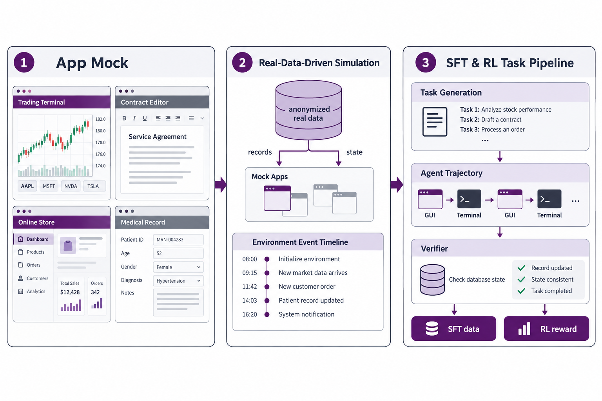

三、课题研究内容
□ 课题四：面向多领域的可验证交互环境规模化构建（待完成）
环境扩展
视觉
文本
■ 问题：复刻环境覆盖的软件类型有限；金融、法律、电商、医疗等行业流程依赖私有系统与真实业务数据，缺少可交互、可验证的训练环境
■ 解决方法：① App Mock：仿真行业业务系统；② 真实数据驱动：以脱敏数据驱动状态与事件演化；③ SFT & RL 任务构造流水线

可验证环境规模化构建流程（示意图）

目标领域：金融 · 法律 · 电商 · 医疗健康 · 办公协作 · 工程（示意图）
• 状态优先的 verifier：以数据库状态校验结果，抑制奖励利用
• 事件依附业务动作，支持长程、跨应用的协作任务
• 研究一的压缩方法用于降低强化学习 rollout 开销
• 事件依附业务动作，支持长程、跨应用的协作任务
• 研究一的压缩方法用于降低强化学习 rollout 开销